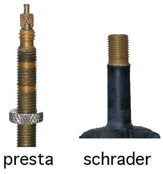

Obviously this page is more for the brands than for the standard kitesurfer but if you want to know more about the new technology, you are welcome.
The sail and bridles are common manufacturing knowledge so I won't talk much about them.
Hoses are put inside sockets that are wider than the tubes, made of very light fabric as there is no strain on them.
The sail and bridles are common manufacturing knowledge so I won't talk much about them.
Hoses are put inside sockets that are wider than the tubes, made of very light fabric as there is no strain on them.
Hoses.
It has to be understood that the hose tubes come from the supplier straight or slightly bent, depending on the way they are produced. There are two methods :
- a weaving machine builds a cylindrical hose. This is a rather costly process as it takes time to do it. The advantage is that it is perfectly homogeneous, without any weak point, so it should come straight.
- a band of fabric is weaved then folded in its length then the two edges are sewn together with a special machine. It is so well done that it is almost invisible and as strong as the previous method. In this case, the hose will probably bend.
Find a manufacturer of such hoses and ask him for our special requirements. My hoses have the following characteristics :
- polyester (or, better, dyneema/spectra but the cost will rise !)
- diameter 48 and 38mm
- weight per meter : 37 and 30g/ml
- fibers are oriented in the length and in the diameter. From my understanding, hoses with fibers oriented for example at 45° or 30° won't work.
Depending on the pressure, my hoses slightly change in diameter (no problem) and length (can be a problem). Try to develop tubes which change their length as little as possible.
For safety reasons I have not yet tested the maximum pressure I can put in these tubes but it has to be made in order to chose the correct fabric weight.
Find a manufacturer who can make cylindrical PU bladders without weldings, of same or smaller diameter as the hoses. For my protos, the bladders were made with the same PU film as classic inflatable kites and it works fine. No need to use a thicker material. Insert the bladders inside the hoses or ask your supplier to deliver both together. He may find a way to do so.
- a weaving machine builds a cylindrical hose. This is a rather costly process as it takes time to do it. The advantage is that it is perfectly homogeneous, without any weak point, so it should come straight.
- a band of fabric is weaved then folded in its length then the two edges are sewn together with a special machine. It is so well done that it is almost invisible and as strong as the previous method. In this case, the hose will probably bend.
Find a manufacturer of such hoses and ask him for our special requirements. My hoses have the following characteristics :
- polyester (or, better, dyneema/spectra but the cost will rise !)
- diameter 48 and 38mm
- weight per meter : 37 and 30g/ml
- fibers are oriented in the length and in the diameter. From my understanding, hoses with fibers oriented for example at 45° or 30° won't work.
Depending on the pressure, my hoses slightly change in diameter (no problem) and length (can be a problem). Try to develop tubes which change their length as little as possible.
For safety reasons I have not yet tested the maximum pressure I can put in these tubes but it has to be made in order to chose the correct fabric weight.
Find a manufacturer who can make cylindrical PU bladders without weldings, of same or smaller diameter as the hoses. For my protos, the bladders were made with the same PU film as classic inflatable kites and it works fine. No need to use a thicker material. Insert the bladders inside the hoses or ask your supplier to deliver both together. He may find a way to do so.
Valves.

Before closing the 2 ends of the inner tube, you have to install a valve.
I use Presta type ones, they are light, allow easy deflating and can be installed with a nut on each side after placing metal and/or rubber washers.
Last advantage : you can perforate the fabric tube without damaging any fiber so that the tube won’t lose strength. It wouldn’t be the case with a Schrader valve.
I preferably place the valve at 30cm from the rear end of the struts to moves back the Center of Gravity.
I use Presta type ones, they are light, allow easy deflating and can be installed with a nut on each side after placing metal and/or rubber washers.
Last advantage : you can perforate the fabric tube without damaging any fiber so that the tube won’t lose strength. It wouldn’t be the case with a Schrader valve.
I preferably place the valve at 30cm from the rear end of the struts to moves back the Center of Gravity.
Struts.

|

|

|
|
Cut the tubes at the right size
|
Install the valve
|
Close the ends of the struts : there are different ways.
One solution would be to develop a plastic piece where air pressure reinforces the tightening. It would not be necessary to weld the bladder ends. It would be quick to install, clean but may be heavier.
My way is handwork but reliable and very light :
One solution would be to develop a plastic piece where air pressure reinforces the tightening. It would not be necessary to weld the bladder ends. It would be quick to install, clean but may be heavier.
My way is handwork but reliable and very light :
- I weld the bladder ends (with additional PU layers), leaving a 3cm “tongue” outside

- I strongly ligature the bladder and hose together at 3cm from the end, where the welding is, with a colson-type hose clamp

- I place around the clamp a small ring previously cut from a PVC plumbing tube

|
- I roll up the 3cm of fabric and inner tube tongue above the ring
- I place a second clamp above the first one |
- I perforate the fabric with the valve.
Don't cut the fibers. No need reinforcements |
Edge hose.
It can have different diameters, for example a larger one for the LE and a smaller one for the tips which have a much smaller arc shape, and for the TE.
The following pictures are from a 150cm test strut, therefore pictures slightly differ from comments
The following pictures are from a 150cm test strut, therefore pictures slightly differ from comments
|
- I cut a piece of wide hose the length of the LE + 15cm
- I cut a piece of narrow hose the length of the tips and TE + 15cm - I cut a bladder 40cm longer than the entire edge hose and the diameter of the LE |
|
- I make a 20cm long welding to finish both ends of the bladder as triangles
|
- after introducing the hose inside its socket, I stick both inner tube ends together with double-sided tape
|

- I make 2 rings by cutting a 1cm section from a PVC tube whose diameter is slightly inferior to the thinner hose
|

- I introduce one of the rings 10cm deep inside one of the hoses
- I put glue or tape then I fold the end of the hose inside itself |
- I push the ring of the widest hose inside the ring of the narrower hose by ovalizing both rings
- I put both rings side by side. I can inflate ! |
That’s an invention on its own that will be difficult to find an alternative.
- light
- cheap
- strong
- reliable
- easy to connect without tools, in seconds
- easy to disconnect without tools, in seconds, for access to bladder (repairs)
- allows connecting tubes of same diameter or different diameters
The 2 rings are strictly the same
- cheap
- strong
- reliable
- easy to connect without tools, in seconds
- easy to disconnect without tools, in seconds, for access to bladder (repairs)
- allows connecting tubes of same diameter or different diameters
The 2 rings are strictly the same
Determining the sizes of the tubes before asking a supplier to make them.
- Check what PVC tube diameters are available on the market
- If 30, 40, 50, 60mm, ask yours suppliers to make 32, 42, 53, 63mm hose and 30, 40, 50, 60mm PU bladders
- If 30, 40, 50, 60mm, ask yours suppliers to make 32, 42, 53, 63mm hose and 30, 40, 50, 60mm PU bladders
This invention has not been protected (except from predators by being published) and is offered in an open-source spirit. Brands are welcome to use it.